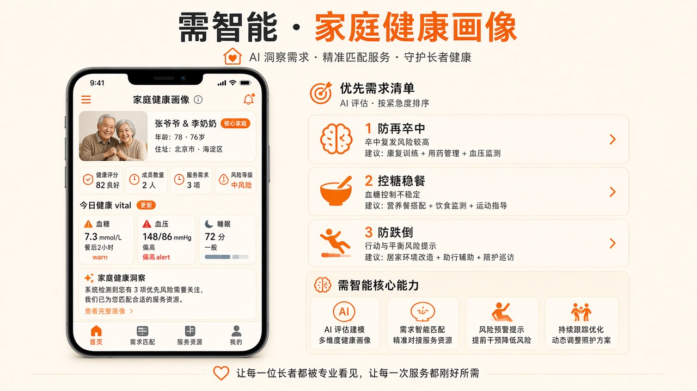
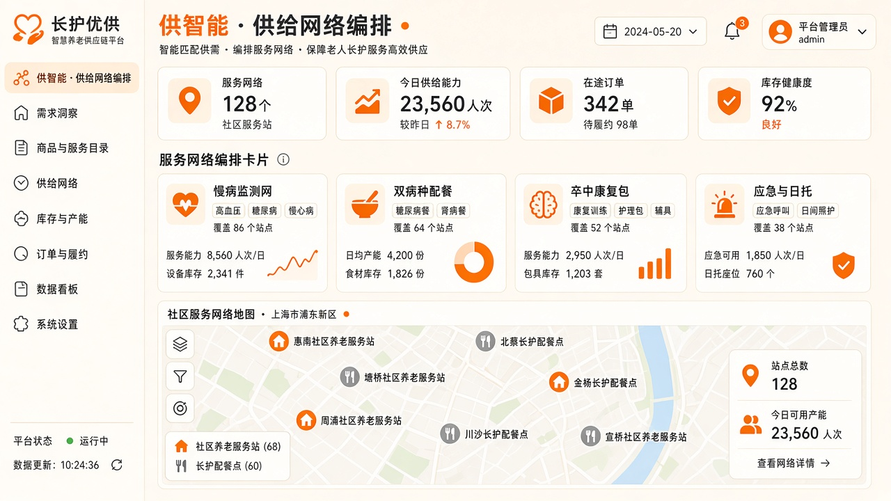

春风康养用户手册
本手册面向业务演示与试用人员，说明康养商城、AI 智伴、订单履约及运营大屏的主要功能与操作路径。 截图取自本地演示环境（端口 8091）。
1. 快速开始
商城页面与大模型 API 已统一到同一服务端口，启动一次即可同时使用商城与智伴。
在项目目录执行 HOST=0.0.0.0 PORT=8091 python3 scripts/llm_server.py（或已配置的 LaunchAgent）。
商城 http://127.0.0.1:8091/index.html；智伴 http://127.0.0.1:8091/agent.html。
同网段设备用本机局域网 IP，例如 http://10.6.24.47:8091/。
在 llm.env 填写千帆 / DeepSeek 密钥；未配置时智伴仍可走固化演示对话。
3. 康养商城
面向长者家庭的微信小程序风格商城：活动 Banner、业务分类、智伴入口，以及四栏服务信息流。

3.1 首页结构
- 顶部 Banner 轮播活动（可点击进入活动页）。
- 站点切换与搜索入口。
- 业务金刚区：慢病守护、康复照护、银发餐桌等。
- 广播站 + AI 智伴卡片（套餐推荐 / 附近食堂 / 健康咨询）。
- 信息流 Tab：到店服务、到家服务、辅具租赁、邮寄到家。
理疗、检测、兴趣课等到站点核销履约。
上门照护、助浴、保洁、陪诊等预约派单。
轮椅、助行器、护理床等租赁月付。
血糖仪、护理垫、蛋白粉等实物全国包邮。

3.2 搜索
支持历史词、猜你想搜与结果列表。可从首页搜索按钮进入 search.html。

3.3 商品详情
- 查看主图、价格、服务亮点与配送说明。
- 「加入购物车」或「立即购买」进入下单页。
- 套餐类商品支付后生成权益，到站按次核销。
4. AI 智伴（康小护）
对话式入口：把家庭档案、体征解读、食堂推荐、照护建议固化在同一页完成，形象与「试试这些」在对话时仍保留。

4.1 智伴首页
- 康小护形象与问候语。
- 「试试这些」推荐问题，可换一批。
- 底部快捷入口：我家爸妈、附近食堂、上门照护、健康数据、社区活动。
- 支持按住说话或键盘输入。

4.2 对话与卡片
- 固化演示：林家双老健康档案、体征、睡眠、营养、业务节点等。
- 回答可带 CUI 卡片：体征、趋势、地图食堂、供给列表、需供匹配表等。
- 追问问题会出现在回复下方，点击继续对话。
- 配置大模型后可流式输出；未配置时仍走演示档答案。
5. 下单与订单
覆盖到店预约、到家派单、套餐权益与核销闭环。

5.1 提交订单
- 从详情页进入下单，确认商品、门店与时段。
- 到店订单支付后生成核销码。
- 到家订单侧重地址与上门时段，不生成到店核销码。

5.2 我的订单
在 orders.html 查看订单状态；详情页可查看核销码、模拟退款等演示能力。商家端可用 merchant-verify.html 扫码核销。
6. 我的

个人中心
查看账号信息、订单入口、常用服务快捷方式。底部 Tab 可在商城 / 健康 / 智伴 / 我的之间切换。
7. 需供三条主线
产品讲解口径：需智能看清家里的事，供智能备好资源，需供匹配把服务接到人。

7.1 需智能
家庭画像、体征档案、能力评估、体征→需求解析。智伴问「最需要什么照护」「打开健康档案」可演示。

7.2 供智能
服务要素 / 项目 / 套餐编排；监测网、双病种配餐、卒中康复包、应急日托。食堂成交锁定结算主体。

7.3 需供匹配
把「空腹血糖偏高」等信号配对控糖套餐与用药提醒，形成本周履约闭环并回传子女。
8. 运营驾驶舱
面向站点 / 中心运营人员的 PC 大屏与管理清单。

8.1 需求侧总览
按站点、人群、场景筛选，查看需求热力与供给对照。入口：admin/center/demand-overview-screen.html。

8.2 综合运营大屏
食堂就餐、托养、上门、团购、设备体验等 KPI。入口：admin/center/ops-screen.html。完整管理清单见 admin/index.html。
9. 常见问题
| 现象 | 原因与处理 |
|---|---|
浏览器 ERR_CONNECTION_REFUSED |
8091 服务未运行。执行 HOST=0.0.0.0 PORT=8091 python3 scripts/llm_server.py，或确认 LaunchAgent local.kangyang.llm8091 已加载。 |
| 智伴提示「连不上大模型 / 501」 | 请用 8091 统一服务打开页面（不要用纯静态端口）。确认 /api/llm/status 返回 200。 |
| 内网手机打不开 | 使用局域网 IP（非 127.0.0.1），确认电脑与手机同一网段，服务已 HOST=0.0.0.0 绑定。 |
| 智伴只回答演示档案 | 演示档对「林家双老」问题走固化知识；其他问题需配置 llm.env 密钥。 |
10. 入口一览
| 名称 | 链接 |
|---|---|
| 康养商城 | ./index.html |
| AI 智伴 | ./agent.html |
| 我的 | ./mine.html |
| 订单列表 | ./orders.html |
| 产品功能与截图 | ./product-features.html |
| 管理端清单 | ./admin/index.html |
| 需求侧总览 | ./admin/center/demand-overview-screen.html |
| 运营大屏 | ./admin/center/ops-screen.html |
截图目录：assets/user-manual/ · 演示数据仅供产品说明，不构成医疗建议